CS184 Project 3-1
Matthew Tang, Kaitlyn Lee
https://cal-cs184-student.github.io/sp22-project-webpages-kaitlynlee/proj3-1/index.html
Part 1
In part 1, we wrote code to generate rays. We can use the equations given in the spec, translating by .5 and then multiplying by tan(hFov/2) (hFoV or vFoV depending on x/y). We multiply this by 2 to ensure the top right corner is (tan(hFov/2), tan(vFov/2), -1).
For ray-triangle intersection, we can use barycentric coordinates to check if the intersection lies inside the triangle. Given a ray, we used the the Muller Trumbore algorithm to compute t (the parameter of ray intersection with the plane), and also alpha, and beta (for the barycentric coordinates). Once we had the barycentric coordinates, we were able to detect if the intersection point was in the triangle by checking to see if all the barycentric coordinates were greater than 0.
For ray-sphere intersection, we followed the procedure in lecture. Ray-sphere intersections can be determined using the quadratic formula. We computed the determinant (using a,b,c formulas from lecture) and if the determinant was negative, we concluded there was no intersections (because no real t values). Otherwise we calculated the t values that were solutions to the quadratic formula.
Here are some renderings of normal shading for small dae files (CBempty and CBspheres)

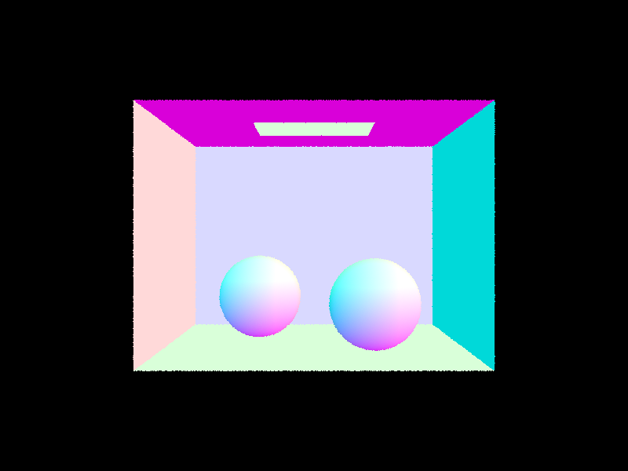
Part 2
To construct the BVH, first we compute the bbox containing all the items and also compute the average centroid location. If the number of items currently is less than or equal to the max leaf size, we just return the current node. Otherwise, we calculate the longest axis (using values cached from computing the bbox) and then we use a lambda function to split objects if they are less than the mean on the left, and right otherwise. At one point we ran into a bug where there were 0 items in some splits, so if that is the case then we move the iterator over to ensure that the split is not degenerate.
Here are some renderings of normal shading for large dae files. The time it would take to render them without BVH would be infeasible (>30mins-1hr most likely).

Rendering... 100%! (0.1343s)

Rendering... 100%! (0.1911s)
We rendered medium sized dae files with and without BVH to compare the speedup. All of the reported times are averaged over 3 trials. Banana had 2458 primitives and took an average of 28.83 seconds without optimization, and took an average of 0.1522 seconds with optimization. The cow had 5856 primitives took an average of 87.32 seconds without optimization, and took an average of 0.1987 seconds with optimization. Thus it seems that the unoptimized version has a render time linear with respect to the number of primitives, but the BVH optimized version is clearly sublinear (log N or almost constant time). Very large dae files render in less than one second, while they would not render at all without optimization, showing clear improvement.


Part 3
In part 3, we implemented two different methods of direct lighting estimates. The first is using uniform hemisphere sampling. In this method, we can sample uniformly within the hemisphere to get wj. Then we can create a new ray and intersection object to check intersection with the BVH. If there is not a hit, we just continue to the next sample. If there is a hit, we use the reflection equation with Li = zero bounce radiance. We make sure to average over all the samples before we return.
The other method is importance sampling. In this method, we can iterate through each light in the scene and sample directions between the light source and hit_p. The rest of this method follows similarly from the other method, using the reflectance equation (Li = sample_L this time not zero bounce radiance).
Here are some images rendered as hemisphere (left) and importance (right).
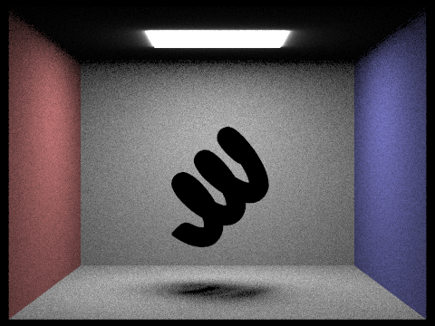
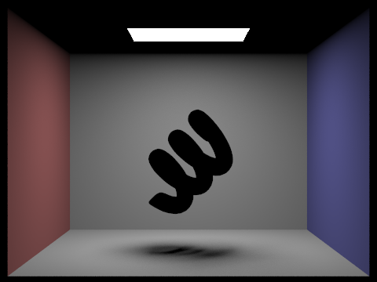
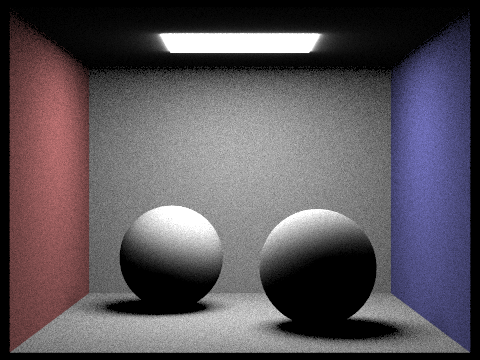
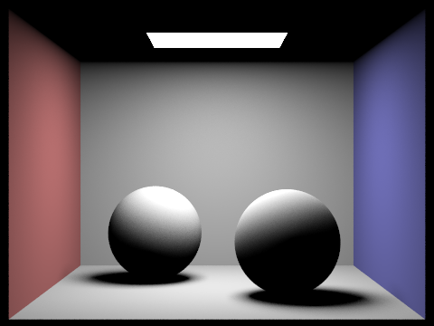
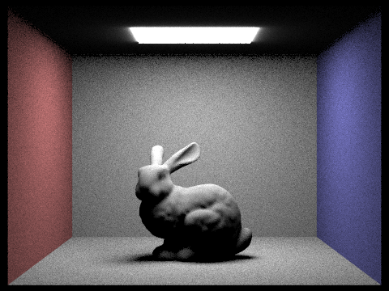
The main difference between uniform hemisphere sampling and importance lighting is that the former is more grainy and the latter is clearer. This is most evident in the background walls of all the left images (far grainier than the right images). This is because importance sampling focuses on the directions that matter more (where we know the light is coming from) to achieve a clearer result.
Here is the bunny scene with 1,4,16, and 64 light rays (1 sample per pixel using light sampling).
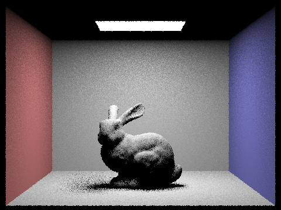
Part 4
For part 4, we implemented indirect lighting. The idea is that we initialize L_out to be the one_bounce_radiance with the current r and isect objects. We then call sample_f on the isect bdf to obtain a wj and pdf. We can reuse code from part 3 to create a new ray and isect object and check if it intersects the bvh. If it doesn't intersect, just return L_out. If it does intersect, we can make a recursive call to at_least_one_bounce_radiance with the new ray and isect objects. We can then compute the L_out using the reflectance equation.
One more feature we added was russian roulette to speed things up. We set p_terminate to be 0.3, and use coin_flip with that probability to determine if we terminate. If we terminate, we do not make any further recursive calls.
Here are some rendered images using 1024 samples per pixel.
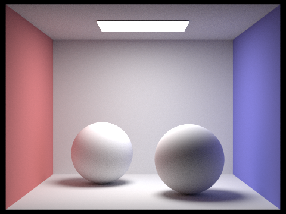
Here is a comparison between only direct and only indirect.
TODO
Here is a comparison between 0, 1, 2, 3, 100 for max ray depth for CBBunny.
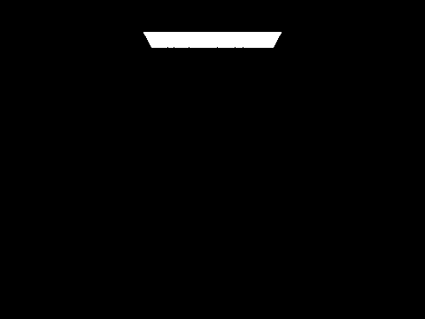
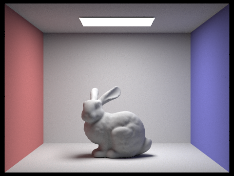
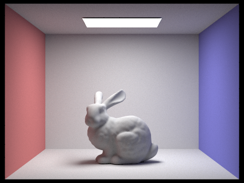
Here is a render of the dragon using various sample per pixel rates (1,2,4,8,16,64,128,1024)
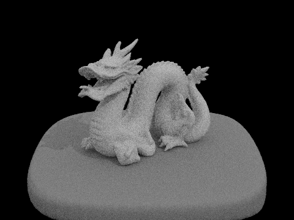

Part 5
For part 5, we implemented adaptive sampling. This allows us to stop sampling for pixels that converge faster. We can do so by computing the I value (1.96 times the square root of sigma^2 over n). We can then compare this to maxTolerance * mu to decide if the pixel has converged. These values can be cleverly computed by just storing a running sum of the illuminance values as well as a running sum of the squares of the illuminance values (as described in the spec). To avoid repeated computation, we can only compute this check every sampleCountBuffer times.
We rendered the bunny scene with 2048 samples per pixel, 1 sample per light, and 5 max ray depth. Below are the heatmaps for the adaptive sampling convergence rates of the bunny (left: no russian roulette, right: russian roulette).